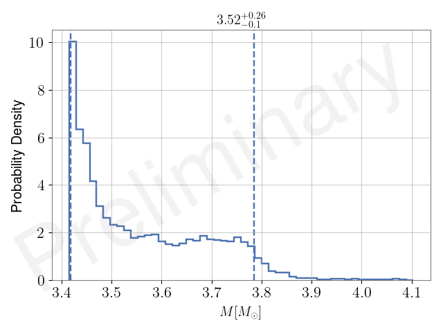

Preliminary Preliminary
Preliminary Preliminary
Preliminary Preliminary
| 5th percentile | 90% HPD | 95th percentile | injected | maxL | maxP | mean | median | std | |
|---|---|---|---|---|---|---|---|---|---|
| chirp_mass | 1.487 | nan | 1.488 | nan | 1.487 | 1.488 | 1.487 | 1.487 | 0.0 |
| mass_1 | 1.757 | nan | 2.642 | nan | 2.553 | 2.503 | 2.184 | 2.154 | 0.294 |
| mass_2 | 1.144 | nan | 1.661 | nan | 1.177 | 1.198 | 1.377 | 1.369 | 0.168 |
| mass_ratio | 0.433 | [0.405 0.915] | 0.945 | nan | 0.461 | 0.479 | 0.653 | 0.635 | 0.166 |
| total_mass | 3.418 | nan | 3.785 | nan | 3.731 | 3.701 | 3.561 | 3.523 | 0.129 |
This page was produced by vivien at 12:37 on November 26 2024